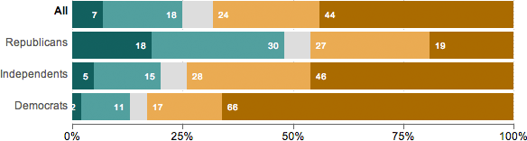

“Do you approve or disapprove of the way the Republicans in Congress are handling their job in charge of the United States House of Representatives?”
Approve (strongly/somewhat)
No opinion
Disapprove (strongly/somewhat)
